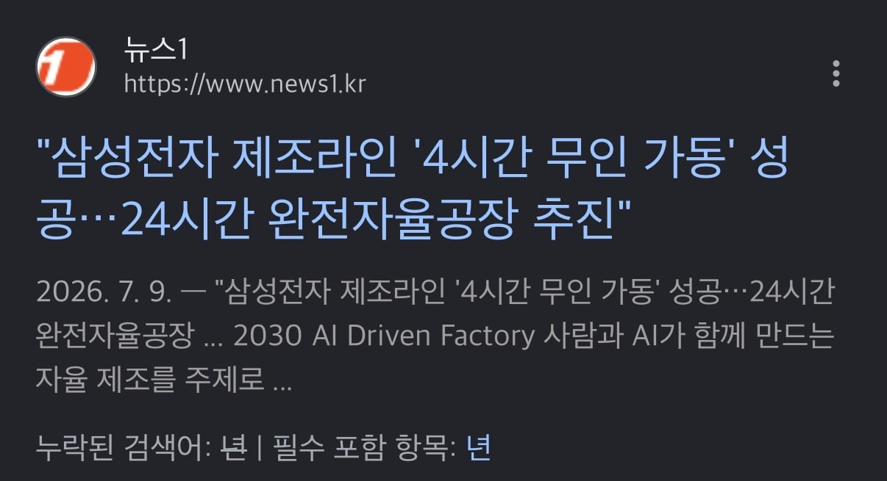
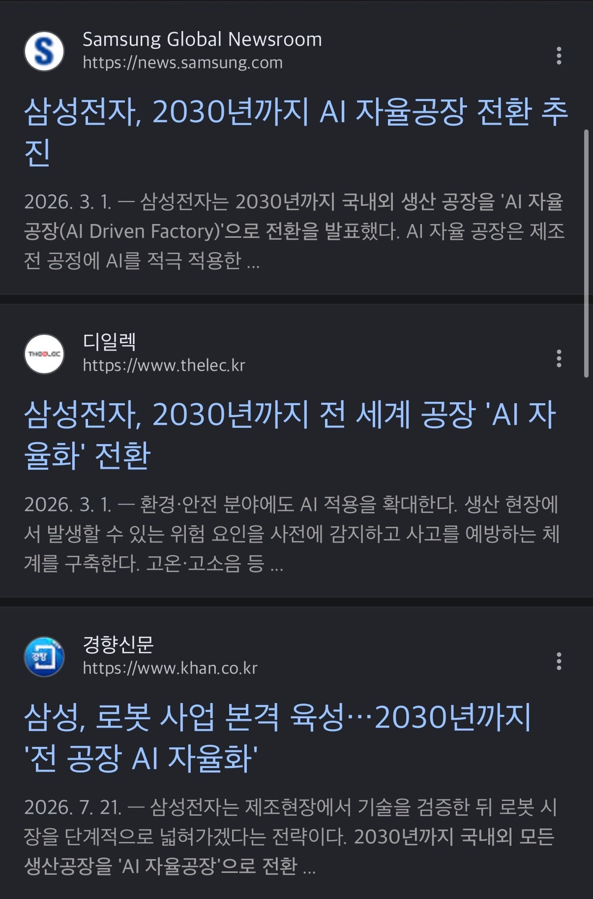
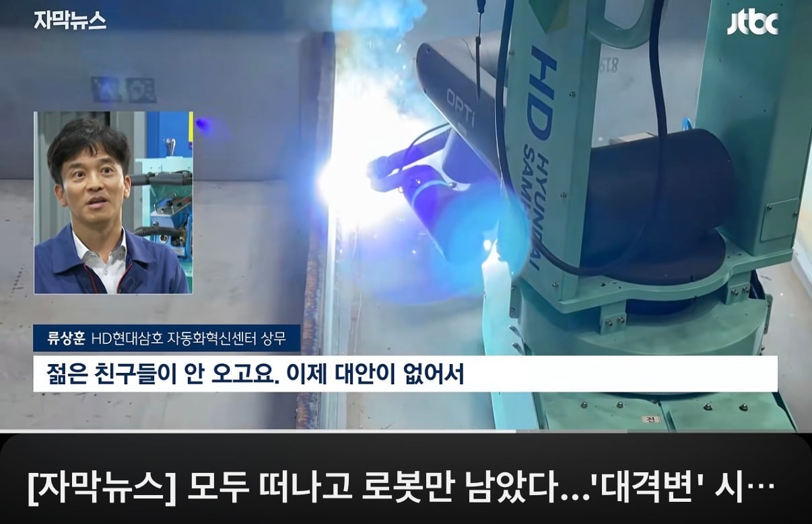
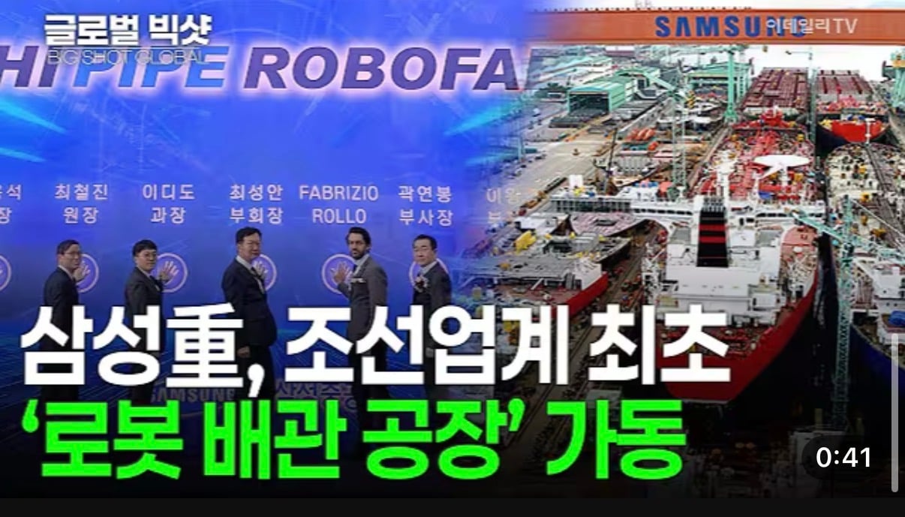
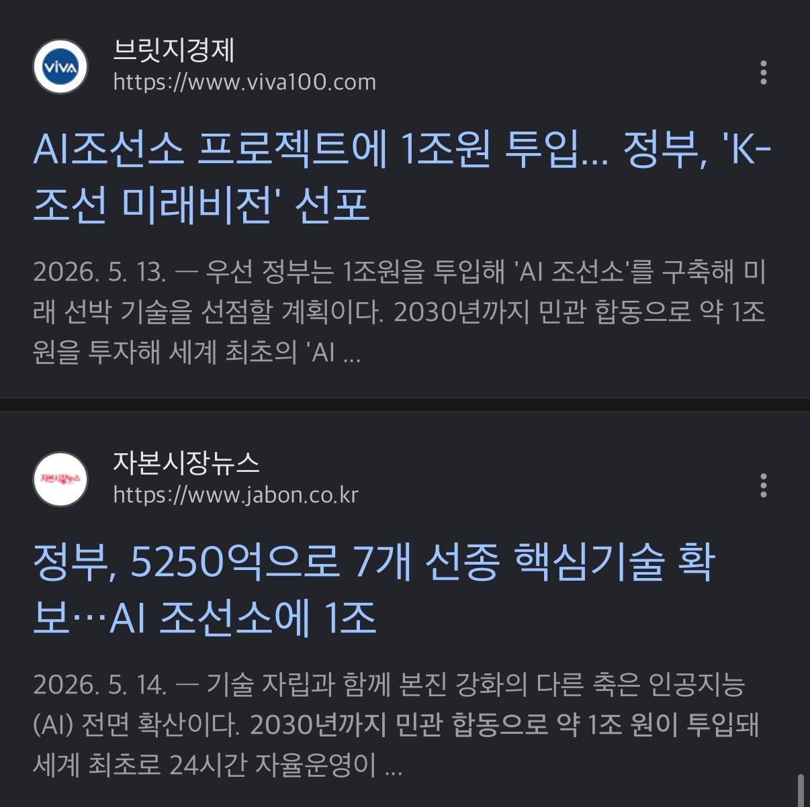

이미 하루 4시간씩 테스트 성공 후 2030년까지 완전 자율화 선언

새로지은 공장만 자율화가 아니라
기존도 ai활용도가 높은 인원 10-30%정도만 운용 예정
이미 올해 채용부터 학력폐지, ai활용 능력보기 시작함
돈도 많으니 무조건 될거같음



조선 이미 로봇용접 다수, 정부에서 밀어주는 중
갑자기 직원들 해고하면 사회적으로 문제 될텐데? -> 안하면 미국 중국한테 밀리고 더 큰 격차로 무너짐. 제조업은 이미 중국 저인건비 대량생산에 박살났는데 또 박살날래?
로봇 도입할 돈 없는 중소기업은? -> 이미 똑같이 중국 제조업에 박살났는데 로봇시대 못따라가면 그대로 더 박살나고 도태될 예정
우리회사는 언제쯤 무인가동이 될까